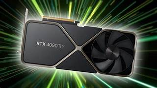

Introduction to Graphics Card
A graphics card, also known as a video card, display card, or graphics adapter, is a crucial component in a computer system responsible for rendering images, videos, and animations for display. It converts data into a signal that your monitor can understand and display, allowing you to see visuals on your screen.
Types of Graphics Cards
There are two main types of graphics cards:
Integrated Graphics Cards:
These are built into the computer's motherboard or CPU (Central Processing Unit). They share memory with the CPU, making them less powerful compared to dedicated graphics cards. Suitable for basic tasks such as web browsing, word processing, and watching videos. Commonly found in laptops and budget desktops.
Dedicated (Discrete) Graphics Cards:
These are separate components installed in a computer via a PCIe (Peripheral Component Interconnect Express) slot on the motherboard. They have their own memory (VRAM - Video RAM) and are much more powerful than integrated graphics cards. Ideal for gaming, video editing, 3D rendering, and other graphics-intensive tasks. Manufactured by companies like NVIDIA and AMD.